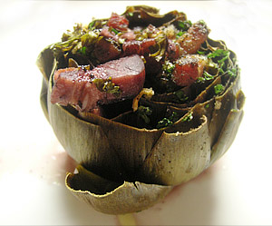

Carciofi ritti "Aufrechte Artischocken"
5 von 6Kleine italienische Artischocken vom Stiel und den harten äusseren Blätter befreien. Oben flach abschneiden. Mit dem Finger das Herz etwas erweitern. Mit Speck, Petersilie, und gepresstem Knoblauch füllen. mit genügend Olivenöl und einem Glas Rotwein begiessen. Mit Salz und Pfeffer würzen und bei 150 Grad eine Stunde sanft garen.
